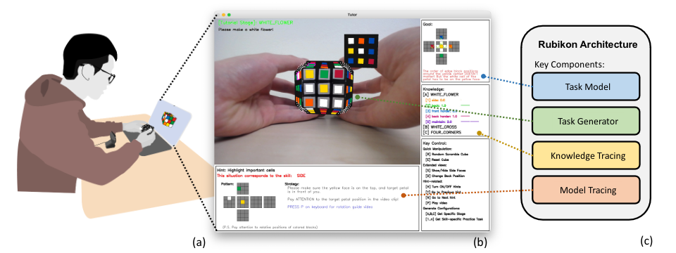

Research Experience |

|
3D Human Object Interaction
Came up a pipeline that conditioned on text, body pose and object orientation, along with DDPM and Classifier-Free Guidance to predit interaction between human and object in 3D. |
|  |
Rubikon: Intelligent Tutoring for Rubik’s Cube Learning Through AR-enabled Physical Task Reconfiguration
Built an Intelligent Tutoring System from scratch through OpenCV and Python to teach users how to solve rubik’s cubes as an instance, and presented the tutoring system in terms of Augmented Reality. |
|
The credit for the website template goes to Jon Barron. |